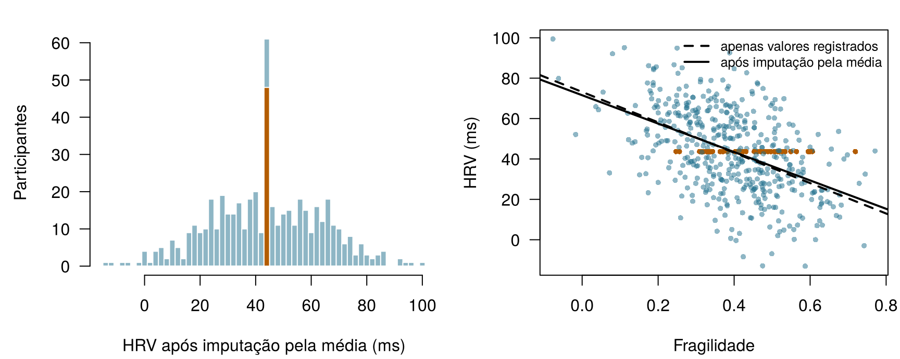
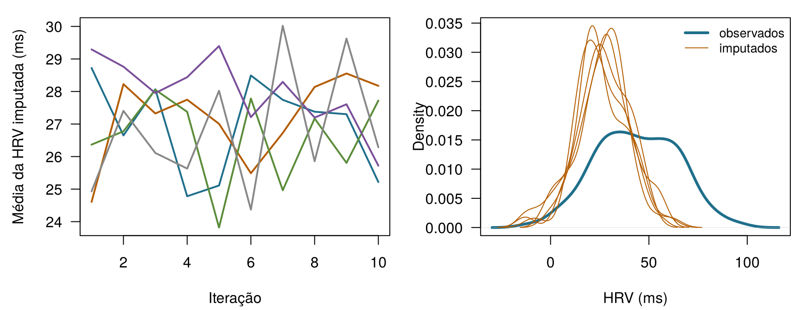
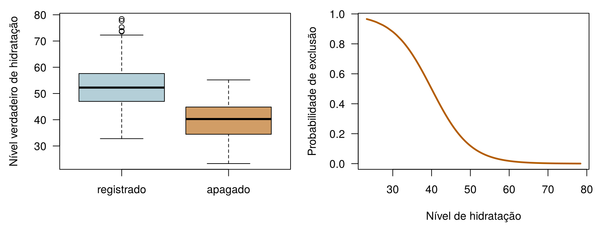

x <- c(10, 12, NA, 16)
mean(x) # o R se recusa: a resposta é desconhecida[1] NAmean(x, na.rm = TRUE) # a média dos valores que foram registrados[1] 12.66667Quatro perguntas para aquecer. Arrisque seu melhor palpite — todas são respondidas ao longo do capítulo.
| Pergunta | Sua resposta |
|---|---|
| Quatro leituras de HRV são 10, 12, (ausente) e 16 ms. Qual é a média dos valores que foram registrados? (digite um número) | |
| Você preenche cada lacuna de uma coluna com a média dessa coluna. O desvio-padrão da coluna … | |
| A bateria do relógio acaba em momentos que não têm nada a ver com a saúde de quem o usa. Essas lacunas são ausentes … | |
| A imputação múltipla preenche cada lacuna com … |
Este capítulo toma emprestadas algumas ideias de capítulos anteriores. Em uma linha cada:
| Exemplo | Quem ou o quê | Desfecho | Rostos que você vai conhecer |
|---|---|---|---|
| 1 UTI Ala 7 | 1.250 pacientes de UTI em 4 hospitais | variação da creatinina em 48 h (lesão renal aguda se ≥ 0,3 mg/dL) | Aoife (71 anos, sepse, risco limítrofe), Tomás (54 anos, risco baixo), Priya (38 anos, risco alto); a Dra. Emma Walsh; Seán, o farmacêutico |
| 2 Ensaio ONCO-1 | 1.000 pacientes randomizados para quimioterapia ou não | redução do tumor (%) | pacientes #0042 e #0917 |
| 3 HomeBeat | 500 pessoas que usam um relógio inteligente em casa | escore de estresse, evento de deterioração | Lena |
| 4 CellWorks | 420 lotes de produção de uma terapia celular | escore de potência | lote CW-118 |
Os quatro conjuntos de dados são simulados e podem ser baixados no apêndice de dados. A apresentação completa está na Seção 1.1.
Este capítulo trata dos buracos de um conjunto de dados: por que aparecem, o que as correções fáceis fazem com as suas conclusões e como lidar com eles de forma honesta. Ele usa principalmente o HomeBeat (Exemplo 3) e uma versão da UTI Ala 7 (Exemplo 1) em que alguns valores laboratoriais nunca foram registrados. Ele tem onze seções e um Lab, sete verificações rápidas, três widgets “Experimente”, um desafio e três missões de programação em R e Python. Reserve cerca de duas horas.
| Símbolo | Significado | Seção |
|---|---|---|
| \(R_{ij}\) | indicador de ausência: 1 se o valor do atributo \(j\) para a instância \(i\) foi observado, 0 se está ausente | Seção 9.1 |
| \(\mathbf{D}\), \(\mathbf{D}_{\text{obs}}\), \(\mathbf{D}_{\text{mis}}\) | a tabela de dados inteira, sua parte observada, sua parte ausente | Seção 9.4 |
| \(M\) | número de imputações (conjuntos de dados completados) | Seção 9.7 |
| \(\hat\theta_m\), \(\bar\theta\) | estimativa obtida no conjunto completado \(m\); estimativa combinada | Seção 9.7 |
| \(V_W\), \(V_B\), \(V_T\) | variância intraimputação, variância entre imputações e variância total | Seção 9.7 |
| \(\delta\) | deslocamento aplicado aos valores imputados em uma análise de sensibilidade | Seção 9.9 |
A lista completa está na página de notação.
Dados ausentes costumam ser tratados como um incômodo técnico, algo que “simplesmente acontece” e é limpo antes de a análise de verdade começar. Suas consequências vão muito mais fundo, e a estatística mais simples de todas basta para mostrar por quê: a média.
Definição 9.1 (Valor ausente e indicador de ausência) Um valor ausente é um valor que deveria ter sido registrado, mas não foi: um exame laboratorial que nunca foi solicitado, um item de questionário deixado em branco, uma noite em que o relógio não registrou nada. No R e no pandas ele aparece como NA ou NaN. Para cada célula de uma tabela de dados escrevemos o indicador de ausência \(R_{ij} = 1\) se o valor do atributo \(j\) para a instância \(i\) foi observado e \(R_{ij} = 0\) se está ausente. A tabela de todos os \(R_{ij}\) é o padrão de ausência (Little e Rubin 2020, cap. 1).
A média amostral de \(n\) valores é
\[ \bar{x} = \frac{1}{n}\sum_{i=1}^{n} x_i = \frac{x_1 + x_2 + \dots + x_n}{n} . \qquad(9.1)\]
A fórmula pressupõe, sem dizer, que todo \(x_i\) existe. Considere quatro leituras de HRV, 10, 12, 14 e 16 ms: a média é \((10+12+14+16)/4 = 13\). Agora suponha que a terceira leitura nunca foi registrada. A fórmula pede \((10 + 12 + {?} + 16)/4\), e não tem nenhuma instrução para o ponto de interrogação.
x <- c(10, 12, NA, 16)
mean(x) # o R se recusa: a resposta é desconhecida[1] NAmean(x, na.rm = TRUE) # a média dos valores que foram registrados[1] 12.66667A recusa do R é honesta. Acrescentar na.rm = TRUE (“remova os NAs”) dá \((10 + 12 + 16)/3 = 12{,}67\), mas repare no que mudou: um valor foi descartado, o número de valores passou de quatro para três, e o resultado responde a uma pergunta diferente — qual é a média das leituras que por acaso temos? Com o indicador \(R_i\), ela fica
\[ \bar{x}_{\text{obs}} = \frac{\sum_{i=1}^{n} R_i\, x_i}{\sum_{i=1}^{n} R_i} , \qquad(9.2)\]
que só estima a média de todos se as leituras registradas forem uma amostra representativa de todas as leituras. Quando não são — quando, como no relógio de Lena, as leituras baixas são as que desaparecem —, \(\bar{x}_{\text{obs}}\) é viesada, e nenhuma quantidade adicional de dados corrige isso.
Outras correções rápidas não se saem melhor. Preencher a lacuna com zero dá \((10+12+0+16)/4 = 9{,}5\), uma média determinada por uma escolha arbitrária. Preenchê-la com a média dos outros três devolve 12,67, mas agora parece que o resultado se apoia em quatro medições, quando só três foram feitas. Mesmo para uma média, portanto, os dados ausentes tornam a resposta indefinida sem um pressuposto, sensível ao pressuposto escolhido e viesada se o pressuposto estiver errado. Os modelos de regressão, que combinam muitas variáveis, ficam ainda mais expostos.
O painel de Lena mostra a média dos valores de HRV que o relógio dela registrou em 30 noites. Em que condição essa é uma estimativa justa da HRV média dela ao longo de todas as 30 noites?
Antes dos métodos fundamentados, vale a pena ver os três atalhos aos quais os analistas recorrem com mais frequência. Eles são populares porque são fáceis e parecem livres de pressupostos. Não são, e os dados do HomeBeat mostram o que fazem. Na versão dos dados que a equipe do ensaio realmente tem (homebeat_missing.csv), quatro sinais do dispositivo vestível têm lacunas: frequência cardíaca de repouso (30 ausentes), HRV (48), temperatura da pele (31) e o índice de atividade (45). Como os dados são simulados, também temos a versão completa (homebeat.csv) e podemos comparar cada atalho com a verdade — um luxo que nenhum estudo real tem.
Definição 9.2 (Análise de casos completos e exclusão por pares) A análise de casos completos (também chamada de exclusão por lista, em inglês listwise deletion) mantém apenas as linhas em que todas as variáveis usadas foram observadas. A exclusão por pares (pairwise deletion, também chamada de análise de casos disponíveis) usa, em cada cálculo, todas as linhas em que as variáveis daquele cálculo foram observadas, de modo que quantidades diferentes se apoiam em subconjuntos diferentes de linhas.
A análise de casos completos é o padrão da maioria dos programas, por isso muitas vezes acontece em silêncio. 134 dos 500 participantes do HomeBeat (27 %) têm pelo menos uma lacuna, então uma análise de casos completos da tabela inteira trabalha com 366 pessoas. Os participantes descartados não são uma fatia aleatória: a HRV média de todos é 42,2 ms, a média de todos os valores de HRV registrados é 43,7 ms, e a HRV média dos casos completos é 46,4 ms. Cada passo para longe de “todos” remove mais leituras baixas.
A exclusão por pares mantém mais dados em cada cálculo: a correlação da HRV com a fragilidade usa 452 participantes, a da HRV com a frequência cardíaca de repouso 427, e a da fragilidade com a frequência cardíaca de repouso 470. Cada correlação descreve um grupo de pessoas ligeiramente diferente, então, juntas, elas podem formar uma matriz que nenhum conjunto de dados único conseguiria produzir, o que faz com que os métodos construídos sobre essa matriz (componentes principais, análise fatorial, alguns algoritmos de aprendizado) falhem ou se comportem de forma errática (Little e Rubin 2020).
Definição 9.3 (Imputação e imputação simples) A imputação substitui cada valor ausente por um valor previsto ou sorteado a partir dos dados. A imputação simples (ou única) preenche cada lacuna uma só vez — com zero, a média, a mediana, uma predição de regressão — e depois analisa a tabela completada como se ela tivesse sido totalmente observada.
A imputação simples pela média faz uma tabela parecer completa, mas tem um preço. A Figura 9.1 mostra a HRV depois que cada valor ausente foi substituído pela média observada. Os 48 participantes preenchidos se acumulam em um único valor, o desvio-padrão cai de 21,0 para 19,9 ms e a correlação entre HRV e fragilidade é puxada em direção a zero, de -0,50 para -0,48. Zero é pior: uma HRV de 0 ms é fisiologicamente impossível, então cria um aglomerado de pacientes extremos falsos. A mediana se comporta como a média: é mais robusta a valores discrepantes, mas produz o mesmo pico e a mesma perda de dispersão.

Os três atalhos lidam com as lacunas por convenção, e não raciocinando sobre por que os valores estão ausentes. A imputação simples tem um segundo defeito, mais sutil: trata um palpite como uma medição, de modo que todo erro-padrão calculado depois fica pequeno demais (Little e Rubin 2020; Buuren 2018).
Um colega preenche os valores ausentes de HRV com a média e depois relata uma correlação entre HRV e fragilidade. Qual é a consequência mais provável?
Conte as lacunas. Os dados do HomeBeat com valores ausentes estão carregados como hb. Preencha a lacuna com a função que marca cada célula como ausente (TRUE) ou presente (FALSE), para que a linha conte os valores ausentes de cada coluna.
A função é is.na(). Aplicada a um data frame, ela retorna uma tabela de TRUE/FALSE, e colSums() conta os TRUE de cada coluna.
colSums(is.na(hb))O método é .isna(); em seguida, .sum() conta os valores True de cada coluna.
hb.isna().sum()Médias e correlações são só o começo. Suponha que a equipe do HomeBeat queira saber como o escore de estresse depende da fragilidade, da HRV e da frequência cardíaca de repouso, e ajuste o modelo linear do Capítulo 4,
\[ \text{escore de estresse} = \beta_0 + \beta_1\,\text{fragilidade} + \beta_2\,\text{HRV} + \beta_3\,\text{FC de repouso} + \varepsilon . \]
A função lm() do R descarta silenciosamente todo participante com uma lacuna em qualquer uma dessas variáveis, então o modelo usa 427 dos 500 participantes. A Tabela 9.1 compara esse ajuste de casos completos com o ajuste nos dados completos, que nesta simulação faz o papel da verdade, e com a imputação pela média e a imputação múltipla, que construímos mais adiante no capítulo.
| Análise | n | Fragilidade | HRV | FC de repouso |
|---|---|---|---|---|
| Dados completos (a verdade nesta simulação) | 500 | 11.07 (2.84) | -0.515 (0.026) | 0.679 (0.042) |
| Análise de casos completos | 427 | 9.41 (3.18) | -0.509 (0.028) | 0.708 (0.047) |
| Imputação pela média | 500 | 16.81 (3.11) | -0.493 (0.027) | 0.749 (0.042) |
| Imputação múltipla (M = 50) | 500 | 11.18 (2.96) | -0.505 (0.027) | 0.691 (0.044) |
O coeficiente de fragilidade da análise de casos completos é 9,41, contra 11,07 nos dados completos. É tentador ler essa queda como um viés: participantes mais frágeis perdem a frequência cardíaca de repouso com mais frequência, então, segundo o argumento, as pessoas mais frágeis ficam sub-representadas e o efeito da fragilidade é subestimado. É uma história natural. Mas será verdadeira?
Olhe primeiro para os erros-padrão. Uma diferença de 1,65 fica bem dentro de um erro-padrão (cerca de 3,2), então um único conjunto de dados não consegue distinguir viés de azar. Uma simulação consegue. Pegamos os dados completos, apagamos valores repetidas vezes com exatamente as mesmas regras (HRV ausente com mais frequência acima dos 60 anos, frequência cardíaca de repouso ausente com mais frequência entre os mais frágeis), ajustamos de novo o modelo de casos completos a cada vez e tiramos a média (Tabela 9.2, cenário A). Ao longo de 200 repetições, o coeficiente de fragilidade dos casos completos tem média 11,02 — a verdade, a menos do ruído da simulação. A queda no nosso único conjunto de dados foi azar. O que a análise de casos completos realmente custou aqui foi precisão: menos participantes, erros-padrão maiores, estimativas que oscilam mais de uma exclusão para a outra.
| Cenário | Coeficiente | Verdade | Casos completos | Imputação múltipla |
|---|---|---|---|---|
| A | frailty | 11.07 | 11.02 (1.20) | 11.35 (0.75) |
| A | resting_hr | 0.679 | 0.672 (0.015) | 0.680 (0.012) |
| B | frailty | 11.07 | 11.04 (1.52) | 11.67 (1.22) |
| B | resting_hr | 0.679 | 0.622 (0.027) | 0.695 (0.034) |
A lição é geral e corrige uma afirmação que aparece em muitos livros-texto. Em uma regressão, a análise de casos completos é não viesada sempre que a chance de uma linha estar incompleta depende apenas dos preditores do modelo, e não do desfecho — seja qual for o aspecto do padrão de ausência (Little e Rubin 2020; White e Carlin 2010; Hughes et al. 2019). No cenário A, a ausência depende da fragilidade, um preditor, e da idade, que não está no modelo; como a idade também afeta o escore de estresse, resta um pequeno viés (compare a frequência cardíaca de repouso com a sua verdade), mas ele é minúsculo perto da dispersão de uma exclusão para a outra. O cenário B é diferente: a HRV desaparece com mais frequência quando o escore de estresse é alto, então as linhas que sobrevivem são selecionadas pelo desfecho. Agora o coeficiente da frequência cardíaca de repouso nos casos completos é 0,622, contra uma verdade de 0,679, um deslocamento de cerca de 2,1 dispersões: um viés genuíno. A imputação múltipla, que usa o escore de estresse para preencher os valores ausentes de HRV, chega muito mais perto, a 0,695.
A imputação pela média é a clara perdedora na Tabela 9.1: ela leva o coeficiente de fragilidade a 16,81, porque os participantes cuja HRV foi substituída pela média agora parecem ter o estresse explicado pela fragilidade. Ignorar os dados ausentes nunca é uma escolha neutra. Se isso causa dano depende de como os dados se perderam, que é o assunto a que passamos agora.
Em uma regressão do escore de estresse sobre fragilidade, HRV e frequência cardíaca de repouso, a frequência cardíaca de repouso está ausente com mais frequência nos participantes mais frágeis, e por nenhum outro motivo. O que a análise de casos completos faz com os coeficientes?
Vimos que os métodos ingênuos às vezes funcionam e às vezes falham. O que decide é a pergunta de que trata esta seção: por que os valores se perderam? Em termos estatísticos, o processo que produz as lacunas é ele próprio aleatório e tem a sua própria distribuição de probabilidade. Escreva \(\mathbf{D}\) para a tabela de dados inteira (atributos e desfecho), divida-a na parte que observamos, \(\mathbf{D}_{\text{obs}}\), e na parte que não observamos, \(\mathbf{D}_{\text{mis}}\), e seja \(R\) o padrão de indicadores de ausência. O mecanismo de ausência é a probabilidade do padrão dados os dados, \(P(R \mid \mathbf{D}_{\text{obs}}, \mathbf{D}_{\text{mis}})\). Rubin (1976) distinguiu três casos, que determinam quais análises continuam válidas (Little e Rubin 2020).
Definição 9.4 (MCAR, MAR e MNAR) Os dados são ausentes completamente ao acaso (MCAR, do inglês missing completely at random) se a probabilidade de uma lacuna não depende de nada nos dados, observado ou não: \(P(R \mid \mathbf{D}_{\text{obs}}, \mathbf{D}_{\text{mis}}) = P(R)\). São ausentes ao acaso (MAR, missing at random) se, uma vez condicionados ao que foi observado, a probabilidade deixa de depender dos valores não observados: \(P(R \mid \mathbf{D}_{\text{obs}}, \mathbf{D}_{\text{mis}}) = P(R \mid \mathbf{D}_{\text{obs}})\). São ausentes não ao acaso (MNAR, missing not at random) se a probabilidade depende dos próprios valores não observados, mesmo depois de condicionar a tudo o que foi observado (Rubin 1976; Little e Rubin 2020, cap. 1).
Os nomes confundem — “ausente ao acaso” não significa aleatório no sentido do dia a dia —, então ajuda associá-los ao relógio de Lena.
Os mecanismos determinam o que cada método é capaz de entregar. Sob MCAR, a análise de casos completos é não viesada, embora desperdice dados. Sob MAR, a média dos valores registrados é em geral viesada — e o mesmo vale para uma regressão de casos completos se a ausência depender do desfecho —, mas os métodos que modelam os valores ausentes a partir dos observados (imputação múltipla, métodos baseados em verossimilhança) continuam válidos, desde que as variáveis que determinam a ausência estejam no modelo. Sob MNAR, nem a exclusão nem a imputação padrão removem o viés, porque a causa das lacunas é algo que nunca vemos; só podemos explorar o quanto as conclusões mudariam sob pressupostos diferentes (Seção 9.9). Note que MAR não significa automaticamente viés: se a variável que determina as lacunas não tem relação com a variável que tem as lacunas, até a média ingênua fica perto da verdade. O viés precisa das duas ligações — do fator determinante para as lacunas e do fator determinante para o valor.
Faça o relógio de Lena falhar. Cada ponto é a HRV verdadeira de um participante do HomeBeat. Escolha por que a HRV se perde, quantos valores se perdem e com que força as lacunas dependem da sua causa. Duas médias são comparadas com a verdade (a média dos 500, que só uma simulação conhece): a média dos valores registrados e a média depois de preencher cada lacuna com uma predição de regressão a partir da idade, da fragilidade e da inflamação basal — todas totalmente observadas. Experimente MCAR, depois MAR, depois MNAR. Meta: encontrar uma configuração em que até o preenchimento por regressão erre a verdade por mais de 1 ms.
Linha contínua: média verdadeira. Tracejada azul: média dos valores registrados. Pontilhada laranja: média após o preenchimento por regressão.
Aparecem três padrões. Sob MCAR, as duas médias ficam em torno da verdade e só oscilam de um sorteio para outro. Sob MAR, a média dos valores registrados fica viesada para cima (participantes mais velhos têm HRV mais baixa e perdem mais leituras), enquanto o preenchimento por regressão, que conhece a idade de cada participante, acerta a verdade. Sob MNAR, as duas erram: idade, fragilidade e inflamação explicam parte da HRV, então o preenchimento recupera parte da diferença, mas os participantes cuja HRV é baixa por razões não registradas continuam escondidos.
Das 9 noites ausentes de Lena, duas se perderam por bateria descarregada e sete por um sono agitado que impediu o sensor de captar o sinal. Como você classificaria os dois tipos de lacuna?
Qual é o mecanismo mais plausível para cada lacuna? Suponha que as variáveis mencionadas sejam registradas, a menos que o item diga o contrário.
O mecanismo é um pressuposto sobre o mundo, mas os dados ainda podem nos dizer bastante coisa. Uma rotina de diagnóstico padrão tem três passos.
1. Quanto está faltando, e onde? Conte as lacunas por variável (você fez isso na missão) e por linha, e veja quais variáveis tendem a faltar juntas. No HomeBeat, faltam 9,6 % dos valores de HRV e 9,0 % dos valores de atividade, e 27 % dos participantes têm pelo menos uma lacuna.
2. Participantes com e sem lacuna diferem no que conseguimos ver? Compare, para cada variável com lacunas, a distribuição das variáveis totalmente observadas entre os dois grupos (Figura 9.3). Participantes com e sem valor de atividade têm quase a mesma fragilidade (média 0,397 contra 0,396), como prevê o MCAR. Participantes sem HRV são mais velhos (idade média 68,4 contra 47,3); os que não têm frequência cardíaca de repouso são mais frágeis; os que não têm temperatura da pele têm escores de estresse mais altos. Cada uma dessas diferenças descarta o MCAR para aquela variável.

3. Modele o indicador. Uma regressão logística com o indicador de ausência como desfecho (Capítulo 5) mostra quais variáveis observadas preveem uma lacuna, ajustando pelas demais:
glm(is.na(resting_hr) ~ frailty, data = hm, family = binomial)
Call: glm(formula = is.na(resting_hr) ~ frailty, family = binomial,
data = hm)
Coefficients:
(Intercept) frailty
-9.915 14.560
Degrees of Freedom: 499 Total (i.e. Null); 498 Residual
Null Deviance: 227
Residual Deviance: 157.1 AIC: 161.1O log-odds de uma frequência cardíaca de repouso ausente sobe 1,5 a cada aumento de 0,1 na fragilidade: uma ligação forte e sistemática. Existem verificações mais formais, como o teste de Little para MCAR (Little 1988a), mas nenhuma delas dá um veredito, por um motivo que vale a pena dizer com todas as letras: os dados não conseguem distinguir MAR de MNAR. Todo diagnóstico compara coisas que observamos; o MNAR diz respeito aos valores que não observamos. As caixas deslocadas da Figura 9.3 mostram que a ausência depende de alguma coisa observada. Não conseguem mostrar que ela não depende de mais nada. Esse julgamento vem do conhecimento de como os dados foram coletados — o dispositivo, a clínica, os pacientes —, e é por isso que as pessoas que coletaram os dados precisam fazer parte da análise.
No HomeBeat, a regressão logística do indicador de ausência da HRV sobre idade, fragilidade, estresse e as demais variáveis observadas tem um bom ajuste. Qual conclusão se justifica?
Os registros da UTI Ala 7 também têm lacunas. Em icu_aki_missing.csv, uma versão dos dados da UTI Ala 7 criada para este capítulo, a albumina está ausente em 7 % dos pacientes, o lactato em 21 % e a creatinina basal em 22 %; 529 dos 1.250 pacientes têm pelo menos uma lacuna. O script de exclusão, sim_ward7_missing.R, documenta os mecanismos, e você está convidado a diagnosticá-los antes de lê-lo.
Quem fica sem lactato? Os dados da UTI Ala 7 com lacunas estão carregados como icu. Preencha a lacuna para que a linha compare o escore SOFA médio dos pacientes cujo lactato foi registrado (FALSE) e dos pacientes cujo lactato está ausente (TRUE).
O escore SOFA está na coluna sofa.
tapply(icu$sofa, is.na(icu$lactate), mean)O escore SOFA está na coluna "sofa".
icu.groupby(icu["lactate"].isna())["sofa"].mean()Os pacientes sem lactato têm SOFA médio de 4,5, contra 7,8 dos demais: o lactato é solicitado com menos frequência para pacientes que parecem bem. Nestes dados simulados, o próprio lactato não tem relação com o SOFA, então a média observada do lactato quase não é afetada — um lembrete de que o MAR só leva a viés quando a causa das lacunas também está relacionada ao valor. A creatinina basal é outra história, à qual voltamos na Seção 9.10.
Depois de pensar sobre o mecanismo, a próxima pergunta prática é a quantidade. Os analistas muitas vezes procuram um limiar — imputar abaixo de 5 %, preocupar-se acima de 20 %, descartar acima de 50 % —, e convenções desse tipo são muito difundidas. São orientações aproximadas, não regras (Madley-Dowd et al. 2019), e três pontos importam mais do que qualquer ponto de corte.
Todo método fundamentado trata os valores ausentes pelo que eles são: quantidades desconhecidas com uma distribuição de probabilidade, dado o que foi observado. Quanto mais falta, mais larga é essa distribuição, e mais incerteza precisa ser levada até o resultado final. É exatamente isso que a imputação múltipla foi concebida para fazer.
A imputação simples falha porque finge saber o que não sabe. A imputação múltipla (IM) substitui cada valor ausente não por um único melhor palpite, mas por vários valores plausíveis, cada um sorteado a partir de um modelo de como o valor ausente se relaciona com o que foi observado (Rubin 1987). Os valores ausentes passam a ser o que realmente são: quantidades incertas com uma distribuição — a mesma visão das incógnitas que atravessa o capítulo bayesiano deste livro (Capítulo 8).
Definição 9.5 (Imputação múltipla) A imputação múltipla cria \(M\) cópias completadas de um conjunto de dados; em cada uma, todo valor ausente é substituído por um sorteio aleatório da sua distribuição preditiva, dados os dados observados. A análise de interesse é executada separadamente em cada cópia, e os \(M\) resultados são combinados com as regras de Rubin em uma única estimativa cuja incerteza inclui a incerteza sobre os valores ausentes.
A imputação múltipla tem três passos (Figura 9.4).
Suponha que a análise \(m\) dê uma estimativa \(\hat\theta_m\) (digamos, o coeficiente da fragilidade) com erro-padrão ao quadrado \(\widehat{\mathrm{SE}}_m^2\). As regras de Rubin (Rubin 1987; Little e Rubin 2020) as combinam em quatro linhas:1
1 Rubin escreve \(\bar Q\), \(\bar U\), \(B\) e \(T\). Usamos \(\bar\theta\) e \(V_W, V_B, V_T\) porque \(B\) e \(T\) já designam o número de amostras bootstrap e uma árvore no Capítulo 6.
\[ \begin{aligned} \bar\theta &= \frac{1}{M}\sum_{m=1}^{M}\hat\theta_m && \text{estimativa combinada}\\ V_W &= \frac{1}{M}\sum_{m=1}^{M}\widehat{\mathrm{SE}}_m^2 && \text{variância intraimputação}\\ V_B &= \frac{1}{M-1}\sum_{m=1}^{M}\left(\hat\theta_m - \bar\theta\right)^2 && \text{variância entre imputações}\\ V_T &= V_W + \left(1 + \frac{1}{M}\right) V_B && \text{variância total} \end{aligned} \qquad(9.3)\]
O erro-padrão combinado é \(\sqrt{V_T}\). Cada termo tem um significado simples. \(V_W\) é a incerteza que teríamos mesmo sem nenhum dado ausente: a variabilidade amostral comum, em média sobre os conjuntos completados. \(V_B\) é a incerteza extra porque há valores ausentes: se as imputações discordam muito, os valores ausentes importam muito. O fator \(1 + 1/M\) corrige o uso de um número finito de imputações. A parcela da variância total devida à ausência, \((1 + 1/M)V_B / V_T\), é uma aproximação da fração de informação ausente sobre \(\theta\).
Os intervalos de confiança usam uma distribuição \(t\) com graus de liberdade \(\nu = (M-1)\left[1 + V_W/\big((1 + 1/M)V_B\big)\right]^2\), de modo que poucas imputações e muita informação ausente produzem intervalos mais largos; programas como o mice aplicam um refinamento dessa fórmula para amostras pequenas (Barnard e Rubin 1999).
Definição 9.6 (Regras de Rubin) As regras de Rubin combinam os resultados de \(M\) análises de dados imputados múltiplas vezes: a estimativa combinada é a média das \(M\) estimativas, e a sua variância é a variância intraimputação média mais \((1 + 1/M)\) vezes a variância entre as estimativas (Equação 9.3).
Para o coeficiente da fragilidade nas cinco primeiras imputações do HomeBeat, as estimativas têm média \(\bar\theta =\) 11,19, a variância intraimputação é \(V_W =\) 8,26 e a variância entre imputações é \(V_B =\) 0,60, então \(V_T =\) 8,26 \(+ (1 + 1/5) \times\) 0,60 \(=\) 8,98 e o erro-padrão combinado é 3,00. Cerca de 8 % da variância se deve aos valores ausentes. Com todas as 50 imputações, a fração de informação ausente é de cerca de 6 % para a fragilidade e de 8 % para a frequência cardíaca de repouso, que também tem lacunas.
Quantas imputações? As primeiras recomendações diziam que três a cinco bastavam para uma boa estimativa pontual (Rubin 1987); para erros-padrão e valores \(p\) estáveis, White, Royston, e Wood (2011) sugerem pelo menos tantas imputações quanto a porcentagem de casos incompletos. No HomeBeat, essa porcentagem é 27 %, então \(M \ge\) 27.
Combine você mesmo. Os pontos são as estimativas de um coeficiente em \(M\) conjuntos completados do HomeBeat (gerados com o mice, M até 50), cada uma com o seu intervalo de 95 %. A barra no topo é o resultado combinado pelas regras de Rubin; a linha vertical é a estimativa obtida com os dados completos, que só uma simulação conhece. Desligue a variância entre imputações para ver o que a imputação simples afirmaria. Meta: definir \(M\) como pelo menos a porcentagem de casos incompletos (27), com \(V_B\) incluída.
Duas coisas a notar. Com \(V_B\) desligada, o intervalo combinado encolhe — essa é a falsa confiança da imputação simples. E, à medida que \(M\) cresce, a estimativa combinada e o seu intervalo param de pular: mais imputações não acrescentam informação sobre os valores ausentes, mas estabilizam a parte de Monte Carlo da resposta.
Nas regras de Rubin, por que a variância total \(V_T\) é maior do que a variância intraimputação média \(V_W\)?
As regras de Rubin à mão. As estimativas de fragilidade e os erros-padrão das cinco primeiras imputações do HomeBeat estão carregados como est e se. Complete a linha que calcula a variância total; a última linha retorna o erro-padrão combinado.
Veja a última linha da Equação 9.3: \(V_T = V_W + (1 + 1/M)\,V_B\).
VT <- VW + (1 + 1/M) * VB # variância totalVeja a última linha da Equação 9.3: \(V_T = V_W + (1 + 1/M)\,V_B\).
VT = VW + (1 + 1/M) * VB # variância totalPor que funciona? Cada conjunto completado é uma versão plausível dos dados completos. Nenhum valor imputado isolado merece confiança, mas, ao longo das cópias, a dispersão dos valores imputados — e, portanto, das estimativas — reflete o quanto estamos incertos sobre eles. Em comparação com a análise de casos completos, a IM usa os valores observados de todos os participantes, o que ganha precisão, e remove o viés que surge quando a ausência depende do desfecho ou de variáveis fora do modelo de análise, desde que essas variáveis estejam no modelo de imputação. Em comparação com a imputação simples, a IM restaura a dispersão dos dados, mantém as correlações intactas e produz erros-padrão que admitem o que não se sabe. As duas propriedades se apoiam no pressuposto MAR (ou MCAR) e em um modelo de imputação sensato (Sterne et al. 2009; Buuren 2018).
Como sortear valores plausíveis para várias variáveis com lacunas ao mesmo tempo? A resposta mais usada é a imputação múltipla por equações encadeadas (MICE, do inglês multiple imputation by chained equations), também chamada de especificação totalmente condicional, implementada no pacote mice do R (Buuren e Groothuis-Oudshoorn 2011; Buuren 2018).
Definição 9.7 (MICE (equações encadeadas)) O MICE imputa várias variáveis incompletas percorrendo-as em ciclo: cada variável com lacunas é imputada a partir de um modelo de regressão sobre todas as outras variáveis, usando os valores imputados atuais das demais, e o ciclo é repetido certo número de vezes (iterações) até que as imputações se estabilizem. Executar \(M\) cadeias independentes produz \(M\) conjuntos de dados completados.
No HomeBeat, um ciclo imputa a frequência cardíaca de repouso a partir das outras variáveis, depois a HRV a partir das demais (incluindo a frequência cardíaca de repouso recém-imputada), depois a temperatura da pele e, por fim, o índice de atividade; dez ciclos costumam ser mais do que suficientes para dados como estes. O modelo de cada variável é escolhido de acordo com o seu tipo. Para variáveis contínuas, o padrão é a correspondência pela média preditiva.
Definição 9.8 (Correspondência pela média preditiva (PMM)) A correspondência pela média preditiva (PMM, do inglês predictive mean matching) imputa um valor ausente (1) prevendo-o com uma regressão cujos coeficientes são sorteados de modo a refletir a sua incerteza, (2) encontrando alguns participantes observados cujas predições são as mais próximas e (3) copiando o valor realmente observado de um deles, escolhido ao acaso. Assim, os valores imputados são sempre valores que de fato ocorrem nos dados (Little 1988b).
A PMM é robusta: não consegue produzir uma HRV impossível de −5 ms e preserva a forma de distribuições assimétricas (Buuren 2018). A análise inteira cabe em poucas linhas. (O pacote mice não roda no navegador, então este bloco é mostrado em vez de executado; os resultados foram calculados quando o livro foi gerado, por ch09_mice.R.)
library(mice)
hm <- read.csv("data/homebeat_missing.csv")
vars <- c("age", "baseline_inflammation", "frailty", "resting_hr", "hrv",
"skin_temp", "activity_index", "stress_score", "event_occurred")
imp <- mice(hm[, vars], m = 50, method = "pmm", maxit = 10, seed = 2025)
plot(imp) # gráficos de traço: as cadeias se misturaram?
densityplot(imp, ~ hrv) # valores imputados (vermelho) contra observados (azul)
fit <- with(imp, lm(stress_score ~ frailty + hrv + resting_hr)) # analisar cada cópia
summary(pool(fit), conf.int = TRUE) # regras de RubinDuas decisões neste código merecem atenção. O identificador fica de fora, porque não carrega nenhuma informação. E o desfecho, stress_score, está no modelo de imputação. Isso surpreende muita gente — não seria circular? Não é: deixar o desfecho de fora imputaria a HRV como se ela não tivesse relação com o estresse, e enviesaria o coeficiente da HRV em direção a zero. O modelo de imputação deve conter todas as variáveis do modelo de análise, incluindo o desfecho, mais variáveis auxiliares que prevejam as lacunas ou os valores ausentes (White, Royston, e Wood 2011; Sterne et al. 2009).
Antes de confiar no resultado, olhe dois diagnósticos (Figura 9.5). O gráfico de traço acompanha a média dos valores imputados em cada cadeia ao longo das iterações: as cadeias devem se entrelaçar sem tendência. O gráfico de densidade compara os valores imputados com os observados; sob MAR, eles não precisam ser idênticos — aqui os valores imputados de HRV são mais baixos, porque os participantes que os perderam são mais velhos —, mas devem ser plausíveis.

Os resultados combinados estão na última linha da Tabela 9.1. Os coeficientes ficam próximos da verdade dos dados completos, com erros-padrão entre os dos dados completos e os da análise de casos completos: a IM recuperou parte, não toda, da informação perdida com as lacunas. Não tire conclusões demais de quão perto um único conjunto de dados chega da verdade; como mostrou a Tabela 9.2, a comparação justa é feita ao longo de muitas repetições.
A PMM é um padrão robusto para variáveis contínuas, mas o argumento method de mice() pode ser definido separadamente para cada variável (Buuren e Groothuis-Oudshoorn 2011; Buuren 2018):
| Método | Tipo de variável | O que faz |
|---|---|---|
"pmm" |
contínua (qualquer numérica) | correspondência pela média preditiva: copia um valor observado de um doador com predição semelhante |
"norm" |
contínua, aproximadamente normal | regressão linear bayesiana: sorteia os coeficientes e a variância residual da sua distribuição a posteriori e depois acrescenta ruído aleatório |
"norm.nob" |
contínua | regressão linear com ruído aleatório, mas sem sortear os coeficientes; subestima a incerteza |
"norm.boot" |
contínua | regressão linear reajustada em uma amostra bootstrap, depois acrescida de ruído |
"norm.predict" |
contínua | a própria predição da regressão, sem ruído: uma imputação única e determinística que encolhe a variância; apenas para ensino ou como referência |
"logreg" |
binária (fator de dois níveis) | regressão logística |
"polyreg" |
categorias não ordenadas | regressão logística multinomial |
"polr" |
categorias ordenadas | modelo de chances proporcionais, que respeita a ordem |
"cart", "rf" |
qualquer | árvores de classificação e regressão, florestas aleatórias (Capítulo 6); captam interações e não linearidade |
"2l.norm", "2l.pan", "2l.lmer" |
contínua, agrupada | modelos multinível, para medidas repetidas dentro de participantes ou pacientes dentro de hospitais |
"~ I(...)" |
variável derivada | imputação passiva: recalcula uma variável a partir de outras a cada iteração |
A imputação passiva mantém as variáveis derivadas coerentes. Se o índice de massa corporal é calculado a partir do peso e da altura, impute o peso e a altura e deixe o mice recalcular o IMC a cada vez, com method["bmi"] <- "~ I(weight / (height / 100)^2)", em vez de imputar o IMC separadamente e correr o risco de combinações impossíveis. Para as leituras noturnas do HomeBeat — muitas noites por participante —, um método multinível seria o próximo passo natural, porque as leituras de uma mesma pessoa se parecem mais entre si do que as leituras de pessoas diferentes.
Tudo até aqui pressupôs MAR. O relógio de Lena não colabora: suas lacunas caem nas piores noites dela. Para ver o que acontece nesse caso, acrescentamos ao HomeBeat um marcador fictício, hydration_level (média 50, desvio-padrão 10), e apagamos seus valores com uma probabilidade que aumenta à medida que a hidratação diminui — um mecanismo MNAR de livro-texto, sem relação com nenhuma outra variável. Cerca de 20 % dos valores se perdem (Figura 9.6).

A média dos valores registrados é 52,6, contra uma média verdadeira de 49,9. Agora execute a imputação múltipla exatamente como antes, sob MAR. A média combinada é 52,5: nada melhor do que a média ingênua. A IM não pôde ajudar, porque nada do que foi observado está relacionado com a hidratação; sob MAR, ela preenche as lacunas com valores parecidos com os observados, que são os valores errados. Imputar uma variável assim junto com as outras, como se fosse MAR, é um erro comum e silencioso: com dados reais não conheceríamos a média verdadeira, então nem sequer veríamos a falha.
O que se pode fazer? Como os dados não conseguem revelar o mecanismo MNAR, a abordagem honesta é uma análise de sensibilidade: perguntar o quanto a conclusão muda sob uma gama de afastamentos plausíveis do MAR (Carpenter e Kenward 2013; Buuren 2018).
Definição 9.9 (Análise de sensibilidade (ajuste δ)) Uma análise de sensibilidade repete uma análise sob pressupostos diferentes para ver se a conclusão se mantém. Na abordagem de ajuste δ para MNAR, os valores são imputados sob MAR e depois deslocados por uma quantidade \(\delta\) (“os valores ausentes são, em média, \(\delta\) unidades mais baixos do que valores observados que, quanto ao resto, são semelhantes”); a análise é repetida ao longo de uma gama de valores de \(\delta\) escolhida com pessoas que conhecem os dados, e os resultados são relatados lado a lado.
Quão longe do MAR? Cada valor de \(\delta\) desloca todos os valores imputados de hidratação por essa quantidade antes da combinação (20 imputações, pré-calculadas com o argumento post do mice). Mova \(\delta\) e observe a média combinada e o seu intervalo de 95 %. Depois revele a verdade, que na vida real você nunca veria.
Linha tracejada: média dos valores registrados. Faixa azul: intervalo de 95 % da média combinada.
Aqui a verdade é alcançada em cerca de \(\delta =\) -13: os valores apagados eram muito mais baixos do que os registrados. Em um estudo real, o analista apresentaria a curva inteira e perguntaria à equipe clínica quais deslocamentos são plausíveis. Se a conclusão sobrevive a todo \(\delta\) plausível, ela é robusta à preocupação com o MNAR; se ela se inverte dentro da faixa plausível, os dados não conseguem resolver a questão, e isso também vale a pena saber. Existem modelos MNAR mais formais — os modelos de seleção, que modelam a probabilidade de uma lacuna em função do valor ausente, e os modelos de mistura de padrões (pattern-mixture models), que modelam os dados separadamente para cada padrão de ausência —, e o mice oferece alguns deles, mas todos se apoiam em pressupostos que os dados não conseguem verificar (Little e Rubin 2020; Carpenter e Kenward 2013).
Para Lena, a lição é prática. A média do painel dela trata as lacunas como se fossem MCAR, em uma situação que provavelmente é MNAR. Se a HRV dela nas noites agitadas for ao menos um pouco mais baixa do que nas noites registradas, a média verdadeira dela é mais baixa do que o painel mostra — e sete noites ruins em um mês já são, por si sós, um sinal. A enfermeira deve ligar.
A maior parte deste capítulo tratou de inferência: estimar uma média ou um coeficiente sem viés, com uma incerteza honesta. Os modelos de predição — os escores de risco da Parte II — mudam as prioridades, e daí decorrem três pontos (Sperrin et al. 2020).
A creatinina basal da UTI Ala 7 mostra os três pontos. No script de exclusão, uma creatinina basal só existe se o paciente fez um exame de sangue antes da admissão, o que pessoas mais saudáveis raramente fazem: a lacuna depende do próprio valor não visto (MNAR). Os valores registrados têm média de 1,15 mg/dL, contra 1,07 mg/dL verdadeiros. O Lab abaixo ajusta um modelo de predição com imputação pela média do conjunto de treino e indicadores de ausência, na divisão compartilhada da UTI Ala 7 e com os dez preditores (P10, com o hospital) usados na UTI Ala 7 desde o Capítulo 4, e você verá que o indicador de creatinina basal ausente capta parte da informação que a própria lacuna carrega.
As lacunas foram apagadas dos mesmos 1 250 pacientes da UTI Ala 7, por isso os modelos ajustados aos dados com lacunas podem entrar na comparação dos capítulos anteriores (Tabela 9.4; os modelos deste capítulo em negrito): ajustados com os mesmos 1 000 pacientes de treino, agora com lacunas, e testados nos mesmos 250 pacientes de teste, lacunas incluídas. Com os dados completos, a regressão linear (mínimos quadrados) do Capítulo 4 tem um MAE de teste de 0,141 mg/dL. Com as lacunas, a imputação pela média do treino com indicadores de ausência dá 0,144, e a imputação múltipla (mice, 20 imputações, modelo de imputação ajustado apenas com as linhas de treino) dá 0,147. As lacunas custam pouco: a imputação pela média com indicadores ainda é melhor do que a floresta aleatória (0,153) e o XGBoost (0,148) do Capítulo 6 e o BART (0,146, Capítulo 8), todos ajustados aos dados completos, e a imputação múltipla fica entre o BART e o XGBoost. Que a imputação múltipla, o melhor método para inferência, preveja um pouco pior aqui não é um paradoxo: ao imputar sob MAR, ela não tem como usar a informação que uma creatinina basal ausente carrega, e que o indicador capta.
Um modelo de casos completos não está na tabela, porque não pode ser avaliado nos mesmos pacientes. Ajustado com os 553 pacientes de treino sem lacuna, ele só consegue prever para 168 dos 250 pacientes de teste e fica calado para os outros 82. Nesses 168 pacientes o seu MAE é 0,140, mas nos mesmos 168 pacientes o modelo com imputação obtém 0,140 e o modelo de mínimos quadrados com dados completos 0,141: o modelo de casos completos é mais ou menos tão acurado quanto eles, só que está menos disponível.
| Capítulo | Modelo | Preditores | MAE (VC) | MAE de teste | RMSE de teste | R² de teste |
|---|---|---|---|---|---|---|
| 1 | Média de treino (sem modelo) | nenhum | 0,241 | 0,236 | 0,297 | 0,000 |
| 1 | Regressão linear só com o SOFA | SOFA | 0,196 | 0,191 | 0,237 | 0,363 |
| 3 | Regressão linear, dois preditores (conjunto didático) | P2 | 0,176 | 0,171 | 0,213 | 0,485 |
| 3 | Regressão kNN, k = 15, padronizada (conjunto didático) | P2 | 0,179 | 0,176 | 0,217 | 0,467 |
| 3 | Regressão kNN, k = 22 por VC, padronizada | P10 | 0,172 | 0,168 | 0,206 | 0,517 |
| 4 | Regressão linear (OLS) | P10 | 0,147 | 0,141 | 0,174 | 0,656 |
| 4 | Regressão ridge (λ min) | P10 | 0,147 | 0,141 | 0,174 | 0,657 |
| 4 | Regressão ridge (λ 1-SE) | P10 | 0,151 | 0,143 | 0,175 | 0,651 |
| 4 | Lasso (λ min) | P10 | 0,147 | 0,141 | 0,174 | 0,657 |
| 4 | Lasso (λ 1-SE) | P10 | 0,152 | 0,144 | 0,177 | 0,643 |
| 4 | Elastic net (α = 1,0, λ min) | P10 | 0,147 | 0,141 | 0,174 | 0,657 |
| 4 | Elastic net (α = 1,0, λ 1-SE) | P10 | 0,152 | 0,144 | 0,177 | 0,643 |
| 6 | Árvore de regressão podada pela regra 1-SE (rpart) | P10 | 0,194 | 0,186 | 0,231 | 0,396 |
| 6 | Árvore de regressão grande (rpart, cp = 0,001) | P10 | 0,201 | 0,195 | 0,248 | 0,304 |
| 6 | Bagging de árvores de regressão (500 árvores) | P10 | 0,165 | 0,156 | 0,195 | 0,568 |
| 6 | Floresta aleatória (500 árvores) | P10 | 0,165 | 0,153 | 0,191 | 0,587 |
| 6 | XGBoost (152 rodadas, número escolhido por VC com 5 partições) | P10 | 0,157 | 0,148 | 0,184 | 0,614 |
| 7 | Rede neural, MLP 32-16 (scikit-learn, 30 épocas) | P10 | 0,171 | 0,161 | 0,205 | 0,522 |
| 8 | Regressão linear bayesiana (rstanarm) | P10 | 0,147 | 0,141 | 0,174 | 0,656 |
| 8 | BART, 50 árvores (pymc-bart) | P10 | — | 0,146 | 0,182 | 0,626 |
| 9 | Regressão linear após imputação pela média de treino + indicadores de ausência (icu_aki_missing) | P10 + 3 indicadores de ausência | 0,151 | 0,144 | 0,179 | 0,636 |
| 9 | Regressão linear após imputação múltipla (mice, m = 20; icu_aki_missing) | P10 | 0,151 | 0,147 | 0,181 | 0,629 |
Você está construindo um modelo de risco de LRA para a UTI Ala 7 e quer imputar a albumina ausente com o mice antes de dividir os dados em conjuntos de treino e de teste, “para usar toda a informação”. Qual é o problema?
Este capítulo fica bem no início do ciclo, onde os dados se tornam a matéria-prima de um modelo. Dados com lacunas (Seção 9.1) não são uma versão menor dos dados completos; são uma versão selecionada, e a regra de seleção — MCAR, MAR ou MNAR (Seção 9.4) — determina se a informação que um modelo devolve é confiável. O que pode dar errado? Uma média de painel que descarta silenciosamente as piores noites (Lena); uma regressão de casos completos selecionada pelo desfecho (Seção 9.3); uma imputação simples que subestima a incerteza (Seção 9.2); uma imputação ajustada no conjunto de teste (Seção 9.10); e, acima de tudo, um mecanismo MNAR tratado como MAR (Seção 9.9). Quem permanece no controle? As pessoas que sabem como os dados foram coletados: elas julgam qual mecanismo é plausível e qual faixa de \(\delta\) é crível, e quem decide passa a ver uma gama de respostas em vez de um único número falsamente preciso. Para a própria decisão, as lacunas também são evidência: um relógio que para de registrar nas noites ruins está dizendo algo à enfermeira.
O Lab reúne o código do capítulo em um só lugar e termina com o exemplo recorrente: diagnosticar as lacunas nos dados da UTI Ala 7 e depois construir um modelo de predição que lide com elas sem vazamento (em Python, com o SimpleImputer do scikit-learn (Pedregosa et al. 2011)), na divisão compartilhada de treino/teste. Execute-o aqui ou baixe-o e execute-o no seu computador: ch09_lab.pt.R · ch09_lab.pt.py.
Três observações para levar adiante. O modelo de casos completos só consegue produzir uma predição para 168 dos 250 pacientes de teste — à beira do leito, ele ficaria calado para qualquer pessoa com uma lacuna — e, nesses 168, é mais ou menos tão acurado quanto os outros (MAE 0,140, contra 0,140 do modelo com imputação nos mesmos pacientes). A imputação pela média do treino com indicadores faz predições para todos, e o seu MAE de teste em todos os 250 pacientes, 0,144, fica próximo dos 0,141 do modelo ajustado aos dados completos (Tabela 9.4), porque em um modelo de predição o objetivo é a acurácia, não coeficientes não viesados. E o indicador de creatinina basal ausente tem um coeficiente claramente negativo (-0,085 mg/dL): a própria lacuna diz ao modelo que o paciente provavelmente era saudável antes da admissão — algo útil aqui, e um motivo para ficar atento a mudanças na prática de solicitação de exames quando o modelo for levado a outro hospital.
stress_score pertence ao modelo de imputação da HRV, mesmo sendo o desfecho da análise.1. A média de 48, 52 e 61 é 53,7 mmol/mol. Os valores ausentes poderiam ser mais altos se pessoas com diabetes mal controlado faltassem às consultas (MNAR se isso depender da própria HbA1c; MAR se for totalmente explicado por variáveis registradas, como a HbA1c anterior); mais baixos se as pessoas bem controladas fossem testadas com menos frequência (mesmo raciocínio).
3. Sim: os participantes mais velhos perdem mais leituras e têm HRV mais baixa, então a média registrada fica alta demais. Mas uma regressão da HRV sobre a idade ajustada aos casos completos tem inclinação não viesada, porque a ausência depende apenas do preditor (a idade); ela é apenas menos precisa.
4. \(\bar\theta = 11{,}27\); \(V_W = (2{,}9^2 + 3{,}0^2 + 2{,}8^2)/3 = 8{,}42\); \(V_B = [(10{,}2 - 11{,}27)^2 + (11{,}5 - 11{,}27)^2 + (12{,}1 - 11{,}27)^2]/2 = 0{,}94\); \(V_T = 8{,}42 + (4/3)(0{,}94) = 9{,}67\), então o erro-padrão combinado é 3,11; a fração de informação ausente é \((4/3)(0{,}94)/9{,}67 \approx 0{,}13\).
6. A imputação deve preservar as relações que a análise vai examinar. Se o desfecho fica de fora, os valores imputados de HRV são sorteados como se a HRV não tivesse nada a ver com o estresse, de modo que, nos dados completados, a associação entre HRV e estresse fica diluída e o coeficiente da HRV é enviesado em direção a zero. Incluir o desfecho não é circular: apenas torna os valores imputados coerentes com a relação observada.
7. Pelo widget, a média combinada cai de cerca de 52,5 com \(\delta = 0\) para cerca de 51,5 com \(\delta = -5\). O limite inferior do intervalo com \(\delta = -5\) é 50,7: a estimativa pontual fica acima de 51 em toda a faixa, mas, no extremo dela, o intervalo já não exclui valores abaixo de 51, então a afirmação não é segura. Se a equipe achar que deslocamentos maiores são possíveis, ela não se sustenta.
| Ideia deste capítulo | Onde ela reaparece |
|---|---|
| Os dados ausentes do relógio de Lena | Capítulo 11 (agrupamento de fenótipos do HomeBeat com sinais incompletos) |
| Indicadores de ausência e ausência informativa | Capítulo 12 (o que as explicações revelam sobre os atalhos de um modelo) |
| MAR contra MNAR como pressupostos não testáveis | Capítulo 13 (pressupostos causais que os dados não conseguem verificar) |
| Incerteza que se propaga até a decisão | Capítulo 18 (quando um assistente deve dizer “informação insuficiente”) |
A seguir: o HomeBeat registra muitos sinais para cada participante, e a UTI Ala 7 muitas medições para cada paciente. O Capítulo 10 pergunta o que acontece com as distâncias e os padrões quando o número de atributos cresce, e como enxergar estrutura em muitas dimensões.